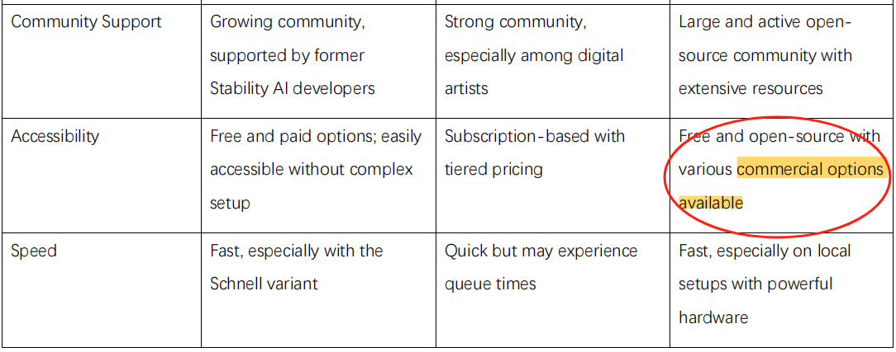

During my placement at Cinefly, I was responsible for evaluating and recommending secondary AI models for tasks such as text generation and image processing. While this task primarily involved technical analysis, it also presented several ethical considerations, particularly around intellectual property and the responsible use of AI technologies.
One ethical challenge arose during my research into different AI models. Some AI tools and datasets used in the evaluation process were proprietary, meaning they were owned by other companies or individuals. I had to ensure that I was respecting the intellectual property rights associated with these models. This involved verifying licensing agreements and ensuring that any models we intended to use were either open-source or properly licensed for commercial use. By taking the time to understand the legal and ethical boundaries regarding IP, I avoided potential misuse of proprietary software, ensuring that our use of third-party tools adhered to industry standards and legal requirements.
Additionally, there was an ethical need to evaluate these AI models fairly and transparently. When comparing performance and cost, I ensured that the evaluation criteria were objective and not influenced by biases or external pressures. This transparency was essential in maintaining trust within the organization and ensuring that the recommendations I provided were based on sound technical analysis rather than subjective opinions.
Although I was mindful of intellectual property and fairness, one area that could have been handled better was conducting a more thorough audit of how each AI model handles data, particularly regarding data privacy and bias. Some models may have unknown biases in their algorithms, which could lead to unintended ethical consequences in real-world applications. In the future, I plan to incorporate more robust auditing mechanisms to ensure that the AI tools we recommend or implement are not only efficient and cost-effective but also align with ethical standards regarding data privacy, fairness, and transparency.
This experience taught me the importance of ethical decision-making in areas like intellectual property and AI evaluation, reinforcing my commitment to responsible technology use and professional accountability.